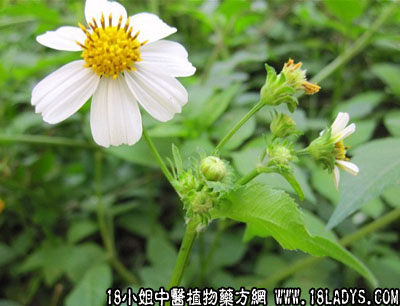

别名：玉盏金杯、感暑草、鬼针草、蟹钳草。
植物名：三叶鬼针草。
生长环境：本品为一年生草本。荒地、村旁、田基上或溪流边均很常见。
分布：广布于全球的温带地区，我国南部各省均产。
入药部分：全草。
采集期：夏、秋。
自采地点：郊外。
性味：性微凉、味淡。
功能：清热、解表。
主治、用量和用法：1、感冒发热：干用1至2两，清水煎服；2、癍痧，配伍用；3、痔疮：生用4至8两，煎水外洗患处及熏肛门。
验方：（治癍痧发热方）金盏银盘1两、山芝麻5钱、鹰不泊5钱、倒扣草1两、海金沙藤5钱、清水四碗，煎成一碗半，热服。
（方解）热困在里，发为癍痧，治疗之法，宜在清热之中，兼解表导下，使邪有出路。本方金盏银盘解表清热；倒扣草、金沙藤利水清热；山芝麻清热滑肠；鹰不泊专于清热。全方位法，层次分明。
（方歌）金盏银盘治癍痧，鹰不泊海金沙藤，山芝麻合倒扣草，解表清热效如神。
参考资料：《广州市卫生局中医药临床经验汇编》（1960.3.）内记载金盏银盘合剂治疗145例风热病，治愈率99.31%，其中1例以情况不明，占0369%。药方：金盏银盘1两、金钱草8钱、野菊花5钱、狗肝菜1两、岗梅根5钱、磨盘草5钱、清水煎服，每日服1剂。10～15用1/2，5～9岁用1/3，2～4岁用1/4。
（方解）本方为金盏银盘合剂。金盏银盘味淡、性凉，微解表、治感冒、退暑热；也菊花疏头目风热，相辅为用，则解表作用较强；加以狗肝菜清肝热；磨盘草治久热不退；热则伤津，用岗梅以救其津；并见痰火肺燥，小肠热者，则有金钱草清利之，此方重在退热，能治感冒引起之头痛、耳痛、肺燥、咽痛、肝火小肠热等症状。
（方歌）金银合剂风热好，野菊金钱磨盘草，岗梅用好可救津，狗肝同煎服宜早。
本文解释权归中药大全，本文地址：https://www.daquan.com/post/1545.html